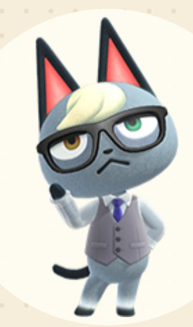
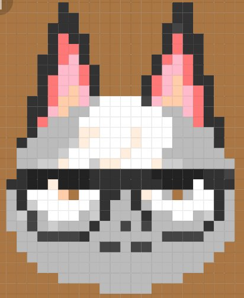
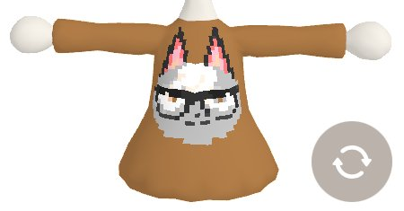
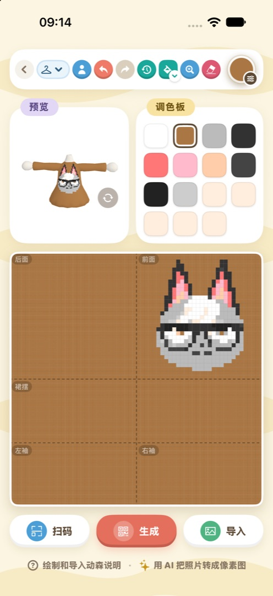
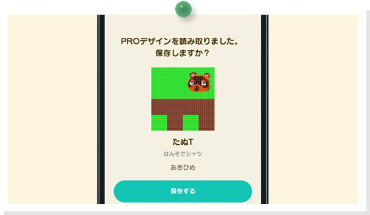

高级设计：把照片做成衣服和挂画
选类型、导入照片、修图、生成二维码，再扫进游戏
在游戏里一格一格地点像素，画一件衣服要花好半天。动森圈圈的「高级设计」能把手机里的照片直接转成游戏里的设计，修好细节、生成二维码，再用 Nintendo Switch App 扫进游戏，就能穿在身上，或者挂在墙上、铺在地上。
动手前先弄清两件事。第一，衣服和帽子只有 iOS App 能做，小程序能做的是 32×32 的图案，做挂画、地砖、旗子都够用。第二，最后导进游戏要靠 Nintendo Switch App，得开通 Nintendo Switch Online 会员，没开的话码做出来也扫不进去。



一张图，转成像素，再印到衣服上
01先选好做什么
App 的入口在图鉴首页的「高级设计」，小程序的入口在首页的「我的设计」。在图鉴里逛到喜欢的东西，也可以直接点详情页的「二维码」按钮（岛民页上叫「制作标志」），它会拿这件东西的图片当底稿，直接开做。
App 打开默认做的是「图案」。想做衣服，先点工具栏上的类型按钮，选好款式再动手。各类型的尺寸和最后生成几张码如下：
| 类型 | 尺寸 | 二维码 |
| 图案 | 32×32 | 1 张 |
| 衬衫 / 连身裙（长袖、短袖、无袖） | 64×64 | 4 张 |
| 针织帽 / 角角帽 | 32×32 | 1 张 |
| 露脸立牌 | 64×64 | 4 张 |
衣服和帽子都能 3D 预览，边画边转着看效果。衣服画布上灰色的部分是这个款式裁掉的地方，在那里画了也不会显示。
注意换类型会把画布清空。一定先选好类型，再开始画。
02导入照片，选对画质
点「导入」，从相册里挑一张图。小程序会提醒你用原图，选图时记得把「原图」勾上，不然图片先被压缩一遍，转出来更糊。进了裁剪页，拖动、双指缩放，把想要的那部分框进去。
画质怎么选
这一步最影响成品，按图片本身的样子来选。
普通照片，App 里选「照片（推荐）」。小程序有「照片（有噪点）」和「照片（清晰）」两种，图不一样效果也不一样，两种都试一下再挑。
本来就是像素画的图，选「像素图」。要是图被放大过、格子对不齐，就用 App 里的「像素图·自动对齐」，它会告诉你认出来是几×几格。
颜色本来就很少的图，用「普通缩放」。它只把图缩小，别的什么都不处理。
其他设置，颜色不对时再动
画质选好以后，大部分图直接就能用。颜色看着不对劲时，再回来调下面几项：
· 取色算法默认是「标准」，颜色不对就换成「精细聚类」或「分块取色」试试。
· 透明界限是给已经抠好背景的 PNG 用的。
· 鲜艳度（App）在颜色发灰的时候调到「强」。
· 抖动（小程序）可以给照片开「弱抖动」，图标、文字就别开了。
· 空白填充（App）决定衣服、帽子、立牌上透明的地方填什么颜色，默认是白色。
拼一整面墙
一个图案只有 32×32，挂一幅大画就显得小了。做图案时可以把一张图切成几块，横竖各最多 15 块，合计最多 49 块，一次就能生成全部二维码。在游戏里按编号一块块铺地砖、挂上墙，就能拼回整张图。
只换衣服的一部分（App）
做衣服时会多出一项「导入到」，可以把照片只放在前面、后面、袖子或裙摆上。比如先给整件衣服铺一层底色，再单独往前胸放一张图。
03动手修细节
照片转出来以后，边缘、眼睛这些细小的地方常常糊成一团，得自己动手修一修。
画笔一次点一格，油漆桶一次把一片相连的同色区域整个填满，点错了就撤销。App 里还能把整个画面挪动位置，画布可以放大到 2× / 4× / 8×，修小地方时放大了好下手。
颜色上有个硬限制：一个设计最多 15 种颜色，第 16 格是透明，而且颜色只能从游戏自带的色板里挑。调色板上换掉一格的颜色，画布上用了这格的点会跟着一起变，想整体调色时很方便。
设计名、设计者和岛名在「设计信息」里改，这些会印在二维码卡片上。
看到别人分享的设计码，点「扫码」导进来，就能在别人的基础上接着改。App 可以用相机直接扫，也可以从相册里选截图；衣服的 4 张码不用按顺序扫，页面会提示你还差哪一张。小程序只能扫 1 张码的图案。

App 里做一件连身裙：上面是 3D 预览和调色板，下面是画布
04生成二维码，扫进游戏
画好以后点「生成」。App 做的衣服会问你「分开生成（4 张）」还是「合成一张」：要扫进游戏就选分开生成，合成一张是方便发给朋友看的。点「保存全部」把码存进相册。
App 会把生成过的设计记在「高级设计历史」里，保留 50 条，以后想改还能翻出来接着改。
扫进游戏的步骤
1. 先开通 Nintendo Switch Online 会员。第一次用的话，在游戏标题画面按 − 键，把「狸端机入口站」（NookLink）打开。
2. 手机上打开任天堂官方的 Nintendo Switch App，登录和游戏机同一个账号，在游戏专属服务里选《集合啦！动物森友会》，进「设计」，选扫描二维码。

Nintendo Switch App 扫完一件衣服的码，会问要不要保存（日文版画面）（图：任天堂）
3. 用另一台手机、平板或电脑打开刚才存下的二维码，对着屏幕扫。衣服的 4 张码要按卡片上标的 1→2→3→4 一口气扫完。
4. 回到游戏，打开手机里的「我的设计」，按 － 键下载，挑一个空格存进去。
小提示Nintendo Switch App 和游戏里的菜单名可能随版本有些出入，认准「设计」「下载」这几个字去找就行。
05几个常见问题
衣服的透明处变成了色带
只有「图案」能做出真正的透明。衣服上留成透明的地方，游戏会沿用旁边的颜色拖出一条色带。所以做衣服时别留透明，空白处都填上颜色（App 里可以用「空白填充」统一填）。
颜色看着不对
一张照片的颜色成千上万，15 种颜色怎么也装不下，偏色在所难免。可以先多换几种「画质」和「取色算法」的组合，挑一个最接近的，再在调色板上把关键的几种颜色改准。
想要更像游戏里的效果
设计页下方有一段「像素图提示词」，复制给豆包、元宝这类 AI 工具，让它先把照片画成 32×32 的像素画，再把画好的图导回来、选「像素图」画质，出来的效果会干净很多。
二维码扫不出来
图片被压缩得太狠，二维码就可能扫不出来。把码发给朋友时，记得发原图。
在小程序里做不了衣服
动森圈圈的小程序和 iOS App 用微信登录后是同一份存档。想做衣服，在 App 上用同一个微信登录就行。
动森圈圈 · 小程序和 iOS App 都搜「动森圈圈」